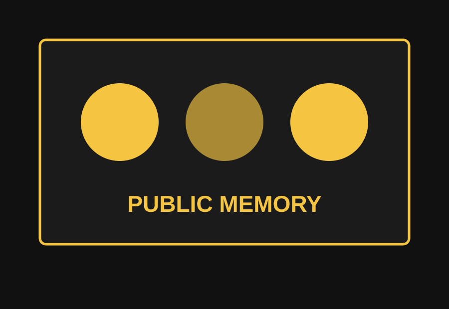
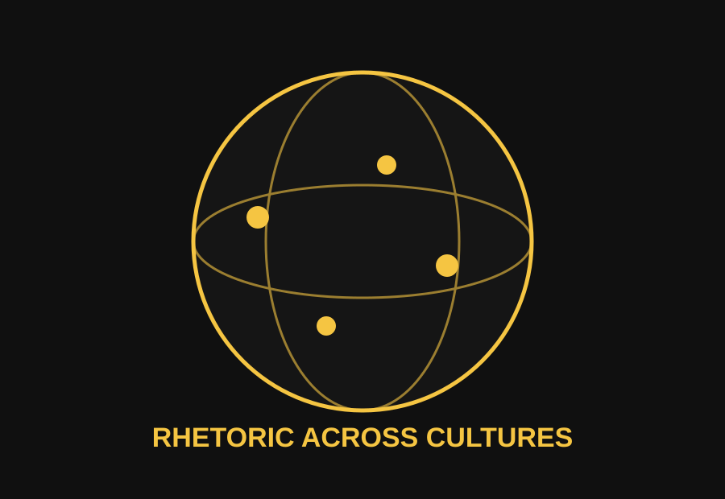

Textual Rhetoric
The phrase "Black Lives Matter" is concise but deeply argumentative. It insists on Black humanity because public systems have often treated that humanity as negotiable.
Black Lives Matter is both a political movement and a rhetorical event. Its power comes from how its message circulates through bodies, screens, streets, classrooms, and institutions.
Black Lives Matter emerged in response to anti-Black violence and institutional failure. Its rhetoric asks audiences to see racism as systemic rather than only individual.
The movement uses public speech, digital writing, protest performance, visual symbolism, and sound. These modes reinforce one another and create a shared vocabulary for mourning, resistance, and reform.

Rhetorical Strategies
The phrase "Black Lives Matter" is concise but deeply argumentative. It insists on Black humanity because public systems have often treated that humanity as negotiable.
Visuals such as protest photographs, street murals, candles, and raised fists create public evidence and emotional pressure.
Chants, speeches, and call-and-response patterns turn individual voices into collective force.
Visual Rhetoric
Discourse Communities
According to James Porter, discourse communities share beliefs and ways of understanding language. Black Lives Matter is persuasive because it speaks to audiences who already recognize injustice, allowing its message to circulate quickly and gain meaning through repetition.
The BLM discourse community includes activists, families, artists, students, scholars, journalists, and online participants who share recognizable terms, symbols, genres, and rhetorical expectations.

Global Comparison
Comparing BLM to anti-caste movements in India shows how rhetoric travels across cultures while responding to local histories. BLM confronts anti-Black racism while Dalit and anti-caste movements challenge caste hierarchy, exclusion, and violence.
The comparison does not make race and caste the same. Instead, it shows how movements use slogans, portraits, marches, songs, and online campaigns to demand dignity and expose systems that are often treated as normal.